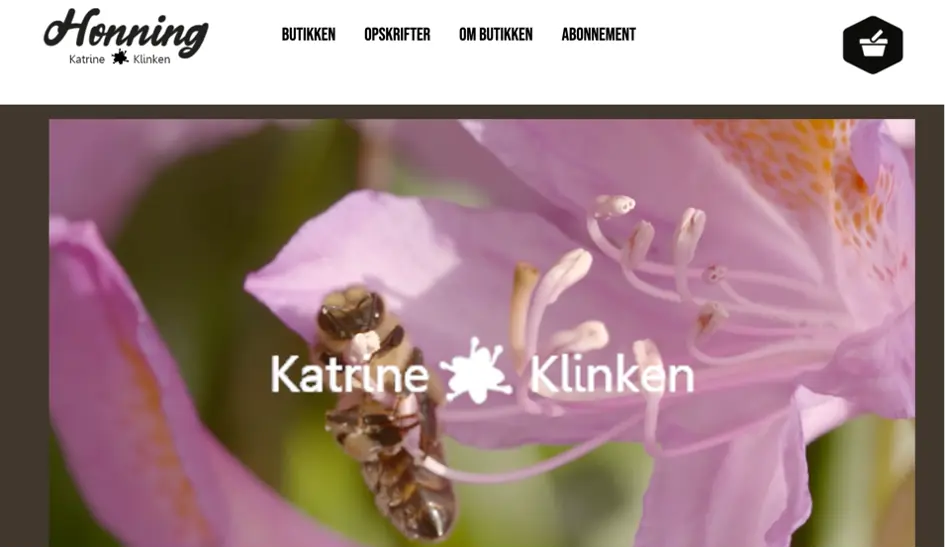
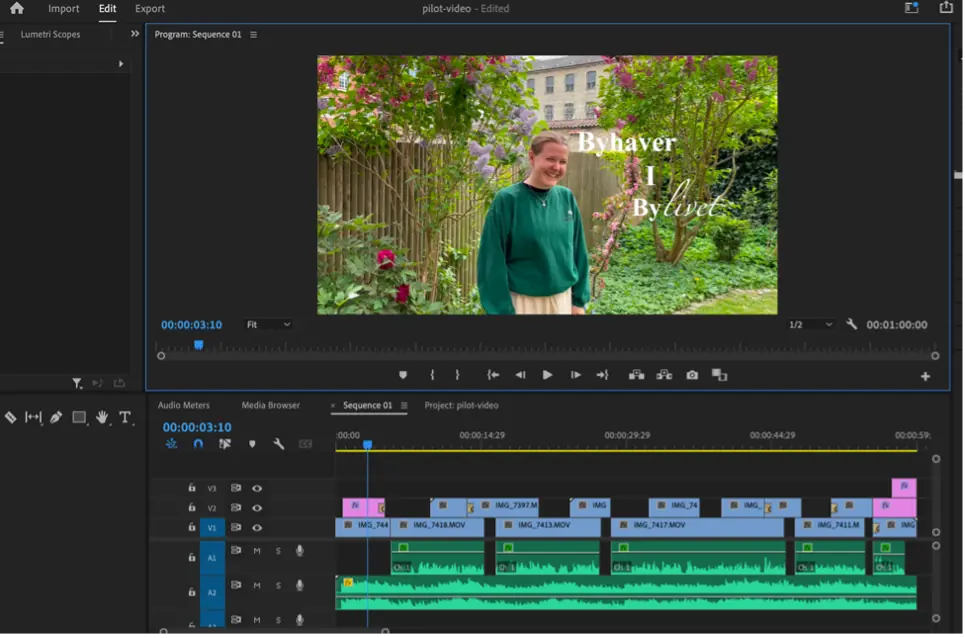
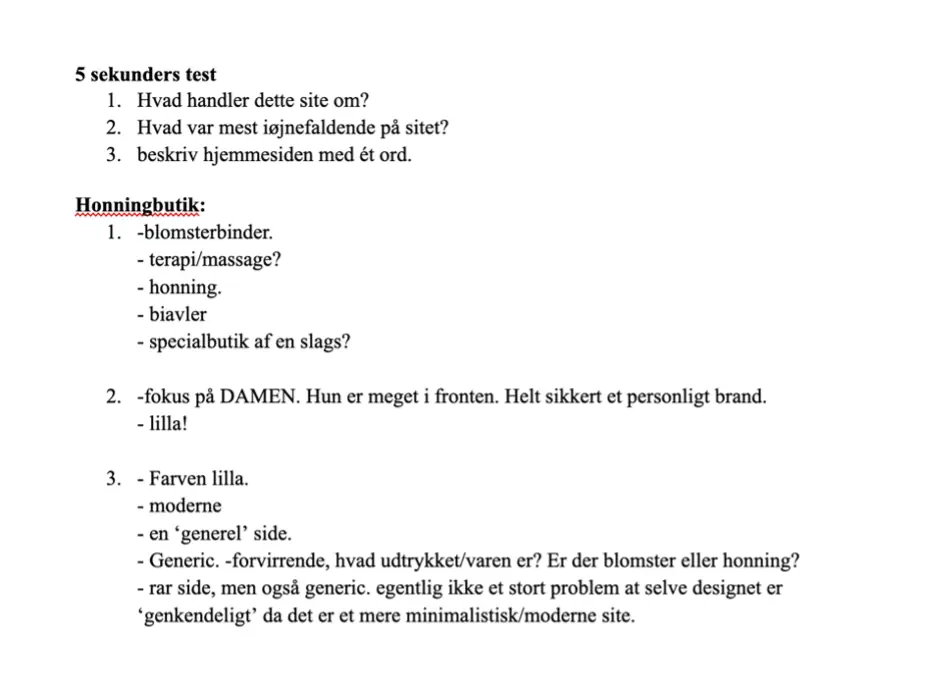

Grundlæggende indhold
Pilotvideo
Den første opgave vi fik tildelt i dette tema, var at lave en pilotvideo og henholdsvis også en pilotsite til. Efterfølgende skulle vi udarbejde et redesign til en virksomhed sammen med sin gruppe og ved siden af arbejde i et procesdokument. Som gruppe fulgte vi projektstyringen scrum og i den forbindelse var min rolle at være scrum master, som jeg udførte ved at oprette, uddelegere opgaver og sørger for at folk fik udført dem.
Videoredigering
Herunder fik vi videoredigeret og kom herunder til at anvende vores færdigheder om komprimeringsformater, hvor vi også fik lært om motions Graphics. Jeg kunne også bruge min viden om Interviewmetoder fra tema 3 og har derudover også kunne tage researchmetoderne derfra.
5 Sekunders Test
Herfra brugte vi henholdsvis Bert-testen og 5 sekunders testen. 5 sekunders testen blev brugt for at få folks førstehåndsindtryk af websitet, så vi herefter kunne arbejde ud fra det.